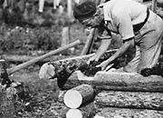
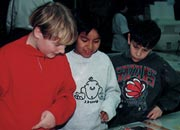
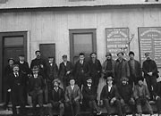
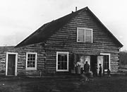
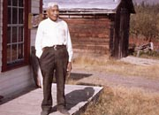
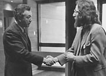
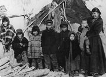

The past 100 years have seen many changes as all Yukon people have worked together to create the vibrant community we have today.
Hah Yah Oo Tlay
Shádhël nigha
kwädür
Hah Yah Oo Tlay
Shádhël nigha
kwädür
It’s true Shádhël
The stories they tell
for you ...
Southern Tutchone song c.1900 about going home to Shádhël
(Champagne) interpreted and transcribed by Daniel Tlen
What ever gave you
the yearning
To drive a thousand
miles of dusty road
And what ever gave
you the feeling
To come up here to
the land of gold ...
Song written 1978 by Yukon musicians Jim Vautour and Manfred Janssen
Continue to Who we were; who we areThe Yukon, Our Home
(Above) Lou and Gene Jacquot, 1930s.
YA, J. Joe collection, 92/26 #11
Claude Tidd notches and mosses the corners as he builds his cabin at the Twelvemile River, north of Dawson, August 1938.
YA, Tidd collection #8158
Three boys look at a display at the Yukon Archives, 1996.
YA, Yukon Archives collection
Employees of British Yukon Navigation Company (B.Y.N.) c.1905. B.Y.N. was the river division of White Pass & Yukon Route.
YA, Scott/Phelps collection, 89/31 #114
A group of women and children at Fort Selkirk, c.1920.
YA, Tidd collection #7716
George Johnston outside trading post, Teslin, 1967.
YA, Bullen collection, 82/354 #14

Commissioner James Smith and Brian Speirs at the
opening of the Yukon Archives, December 1972.
YA, Yukon Public Affairs collection, 81/18 f/14
A Han camp three miles from Dawson, c.1897.
YA, Adney collection, 81/9 #123